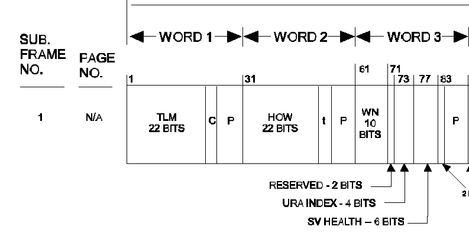
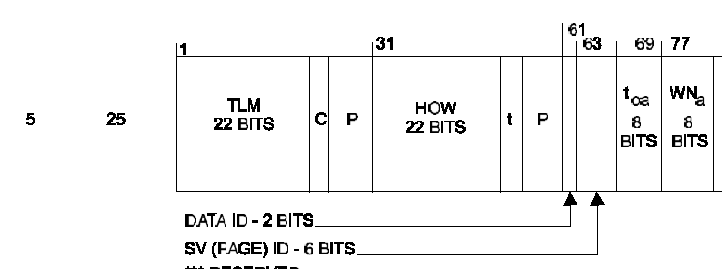
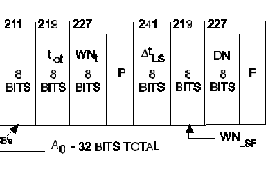

Peter H. Dana
August 12 and August 24, 1999
The GPS Week Number is one of the system parameters transmitted by the GPS satellites in the Navigation Message. This note is a comment on the “rollover” of this value near midnight on August 21, 1999.
Two Web links of particular relevance with respect to the GPS End of Week rollover issue are the Joint Program Office site at:
http://www.laafb.af.mil/SMC/CZ/homepage/y2000/index.html
and the U.S. Coast Guard NAVCEN site at:
http://www.navcen.uscg.mil/gps/geninfo/y2k/default.htm
An on line version of Richard Langley’s excellent review of the issue (Langley, 1998) is at GPS World:
http://www.gpsworld.com/0299/1198innovation.html
The GPS SPS Signal Specification, 2nd Edition (June 2, 1995) with a complete specification for the GPS Navigation Message is available on line:
http://www.navcen.uscg.mil/gps/geninfo/gpsdocuments/sigspec/default.htm
The Interface Control Document (ICD-GPS 200C) is on line at:
http://www.navcen.uscg.mil/gps/geninfo/gpsdocuments/icd200/default.htm
The GPS Navigation Message contains parameters that describe the location of the GPS satellites, their clock offsets, and various other system parameters. The Navigation Message consists of 25 data frames, each divided into five sub-frames. The sub-frames are 300 bit sequences. Bits are transmitted at 50 bits per second. Each sub-frame takes 6 seconds, each frame 30 seconds, and the entire set of 25 frames takes 750 seconds (12.5 minutes) to complete.
Sub-frames one, two, and three contain messages pertaining to the satellite that is transmitting them (complete orbit and clock descriptions) , while sub-frames 4 and 5 contain system data relating to all the satellites (abbreviated orbit and clock data for all the satellites and common system).
Within a GPS receiver the received data bits are aligned, checked for errors (with a parity algorithm), separated into sets of bits representing each individual parameter, scaled, converted into various numeric formats, and then converted where required into specific units. These units include meters, meters squared, semi-circles, radians, seconds, seconds per second, seconds per second per second, and weeks.
Each parameter must be used appropriately to result in GPS-derived position and time estimates in the receiver. Some algorithms are specified partially or fully in the Interface Control Document (ICD-GPS-200C); other methods are left to the discretion of the GPS software designer.
Transmitted by each satellite, every thirty seconds, sub-frame one contains a ten-bit value representing the GPS Week Number (WN). This parameter is transmitted as a ten-bit value ranging from 0 to 1023 (Figure 1).

Figure 1. GPS WN 10 Bits in Navigation Message.
The GPS Week Number can be used to set the current date in a GPS receiver which can then be used to determine what satellites are available for possible tracking by a receiver at an estimated location at a particular data and time. The date can also be used to properly account for the leap-seconds needed for a correct conversion from GPS Time to Universal Time Coordinated (UTC). The ICD does not fully specify how a receiver might make use of date information.
GPS Time is conventionally represented in GPS Weeks and GPS Seconds from the GPS Epoch, the transition from 23:59:59 UTC on Saturday January 5, 1980 to 00:00:00 UTC on Sunday, January 6th. This GPS week, January 6 through January 12, 1980 is week zero (0) and the week of August 15 though August 21, 1999 is week 1023. The week of August 22 through August 28, 1999 is week 1024.
The ten-bit WN parameter can only represent integer week values from 0 to 1023. At 00:00:00 GPS Time on August 22, 1999 the transmitted WN parameter changed from 1023 (1111111111 in bits) to 0 (0000000000 in bits). Because GPS Time leads UTC by 13 leap seconds now, (the rollover moment took place on August 21 at 23:59:47 UTC). This change in the WN parameter from 1023 to 0 is the “rollover” of the GPS Week Number. GPS receivers (if they make use of the WN parameter) must account for which 19.7 year (1024 week) period the WN parameter references. On August 22, 1999 the rollover must be interpreted as a change from GPS Week 1023 to GPS Week 1024.1024 weeks later (on April 7, 2019) the WN will rollover from 1023 to 0, and the rollover must be interpreted as a change from GPS Week 2047 to GPS Week 2048.
The software designers of GPS receivers have a number of ways of insuring that the rollover is interpreted correctly. These techniques range from keeping GPS Week numbers in non-volatile memory, keeping a real-time clock, resolving 19.7 year period ambiguities with software revision dates, resolving these ambiguities using the leap second correction transmitted by the satellites, forcing the user to select the correct date, or simply ignoring the WN parameter altogether and setting dates in other ways (usually with a real-time-clock).
Ignoring the WN parameter is the method used by the first GPS receiver designers. GPS satellites were launched in the late 1970s. These early satellites (and the ground transmitters used to emulate satellites) had no GPS Week Number in the Navigation Message data bits. GPS Time was only defined within one week. The early Interface Control Documents show no such data bits. Early published papers such as :
Van Dierendonck, A. J. and others 1978. The GPS Navigation Message. In Navigation: The Journal of the Institute of Navigation, Washington, DC. VOl25 no. 2.
show no Week Number bits. The SS-GPS-300B dated 3, March 1980 shows no GPS Week Number. These are all based on the early Navigation Data ID Number 1 (data id bits 00) definition used during Phase I of the GPS program. This is no doubt why early receivers designers had no trouble accommodating an explicit Week Number; they had designed receivers that did not need or make use of the WN, it rolled over (implicitly) each week. The first satellite with the Data ID set to 1 (Data ID bits 00) was launched in February of 1978. The last probably was the one launched in April of 1980. The next successful launch was July of 1983, and that satellite was probably the first to transmit Data ID 2 (Data ID bits 01) with the Week Number. Navigation Data with Data ID Number 2 follow the current Navigation Message formats that do include a Week Number. The ICD-GPS-200 Draft of November 20, 1981 shows the ten-bit count for the first time. It is interesting to note that in all early ICD-GPS-200 documents through the 6/1/1993 ICD there is no mention of the rollover. The ICD of 10/10/1993 ICD is the first time the warning phrases are first introduced. "At the expiration of GPS Week number 1023, the GPS week number will rollover to zero(0). Users must account for the previous 1024 weeks (page 34)."
There are three other places in the Navigation Message where the GPS Week Number is used as a basis for parameters. There is an Almanac Week Number (WNa) parameter that is an eight-bit value (Figure 2.). This parameter rolls over every 256 weeks and it is the responsibility of the receiver designer to properly account for this rollover.

Figure 2. Almanac Week Number WNa 8 bits in Navigation Message
There are also two other eight-bit Week Number parameters associated with the conversion of GPS Time to Universal Time Coordinated (UTC). The WNt parameter is the UTC reference week. The WNlsf parameter is the effectively time week number that signifies the week number when the transmitted current leap second parameters should be used (GPS Time does not have leap seconds and so UTC conversions require small corrections as well as an integer number of seconds – currently GPs time is ahead of UTC by 13 leap seconds). Figure 3 shows the location of these two eight-bit parameters which also must be interpreted correctly.

Figure 3. UTC Reference Week (WNt) UTC Leap Second
Effectively (WNlsf) Parameters
Because the use of the GPS Week number and the transmitted WN value is not specified, problems related to the Week Number Rollover issue in receivers that have not properly interpreted the WN parameter are very hard to predict. Problems might range from a few seconds of position error to a complete failure of receiver operation. Published accounts of failure modes for “non-compliant” receivers have no common pattern of failure. One of the more common failure modes is a failure to acquire the satellites that are visible from a particular location at a given time.
Combinations of problems resulting from improper interpretation of the WN, WNa, WNt, and WNlsf bits can lead to all sorts of possible failure modes.
A software failure was reported (Brottlund and Harris 1995) that specifically related to UTC calculations related to UTC Week Number (WNt) and GPS Week Number (WN) parameter interpretations in September 1994, during GPS week 767, some receivers incorrectly identified the UTC week number by 256 weeks, resulting in the calculation of an erroneous GPS-UTC offset and rate.
Of course any hardware and software system is subject to occasional failure modes and GPS is no exception. There have been failures in the Control, Space, and User segments of GPS since the beginning of the program. See the examples of GPS time dissemination failure modes in (Dana 1997).
Receivers designed in such a way that they experience a problem related to the WN rollover are “non-compliant.” Most GPS manufacturers have been very responsible and quick to deal with this issue. The issue has been well known in the industry for over a decade. For many years GPS simulators have been available that allow some form of Week Number rollover testing. While no simulation can completely test any complex hardware and software system such as GPS, most receivers have either been deemed “compliant,” “non-compliant,” or have been fixed. Many GPS manufacturers offer software or hardware upgrades for later models. Some can be download from the Web and installed by customers, some require return of the receiver to the vendor.
There is always concern about the possibility of accidents whatever their cause, but it is hard to envision one caused by a GPS navigation receiver failing. No prudent navigator uses a single navigation aid and so no prudent navigator should be subject to an accident caused by a GPS failure. Certainly someone who misused any navigation aid might get in some sort of trouble should their sole means fail and under some circumstances that might happen with an old or new GPS receiver that failed for any reason. GPS is not allowed for use in private or public aircraft as a sole means of navigation, so even if a GPS receiver should fail there should be no serious problem. Hikers should always carry a map and compass, in addition to a supply of new batteries for their GPS unit. Automobile navigation should never be dependent on GPS, or any other sole means.
GPS receivers used in time and frequency applications should always be used with the possibility of failure in mind. Most receivers used for these purposes have coasting modes that allow for graceful change from GPS control to other means in the event of a GPS failure in the satellites, control system, or in the event of receiver hardware or software failures.
Secondary users, such as those who fly as passengers on aircraft equipped with GPS or who depend on telecommunications systems synchronized with GPS might want to asses the possibility of potential problems and make informed decisions, but should remember that no complex system offers guarantees against failures.
In general, there was no substantive problem with respect to the date change from August 21, to August 22, 1999, but both manufactures and users should be extra cautious during the period and perhaps use the issue as a reminder to never depend on any single system in critical applications.
Brottlund, Brian and Cliff Harris. 1995. UTC reference week calculation errors during GPS week 767. In GPS World. (February): 56.
Dana, Peter H. 1997. Global Positioning System (GPS) Time Dissemination for Real-Time Applications. Real-Time Systems: The International Journal of Time Critical Computing Systems. 12. No. 1 (January).
Langley,
Richard B. 1998. The GPS End-of-Week Rollover. In GPS World (November) 9, no.
11. pp 40-47.